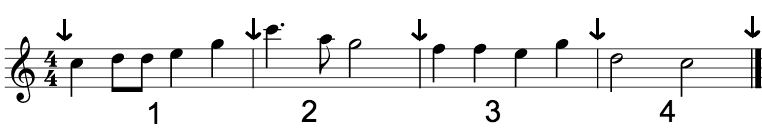

Takter
Alle musikkstykker, bortsett fra de aller særeste, består av takter. En takt er en enkel måte å dele musikk opp i små oversiktlige deler, og et stykkes taktart bestemmer hvordan en takt er bygget opp.
I noteeksempelet fra forrige side så du fire takter. Her er bildet igjen, denne gangen med piler som viser taktstrekene i musikkstykket.

En taktstrek viser hvor en takt slutter og en annen starter. Den ekstra tykke taktstreken i slutten av takt 4 viser hvor hele musikkstykket slutter.
Hver av taktene inneholder en liten del av musikkstykket og tilsammen utgjør de hele stykket. Takter kan altså sees på som byggeklossene i et musikkstykke.
En taktart viser hvor lang en takt skal være. Musikkstykkets taktart er tallene du ser i starten av takt 1, der hvor de to firetallene ligger klemt oppå hverandre.
Den aller vanligste taktarten er fire fjerdedeler, som er taktarten dette eksempelet har.
Om et musikkstykke har taktarten fire fjerdedeler sier man at det går i fire fjerdedeler.
Det øverste tallet forteller hvor mange slag det er i takten, altså hvor mange slag man teller før man er i en ny takt.
Det nederste tallet forteller hva slags verdi et av slagene har, altså hvor langt hvert slag er.
4/4 betyr altså at man for hver takt i musikkstykket teller fire fjerdedeler før man starter på en ny takt.